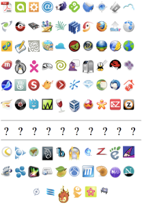

Das offene Internet und Mozilla
Web 2009
Inhalt
||
Beginn
||
< Zurück
|
Weiter >
Weitere Software

Lightning - Kalendar für Thunderbird und SeaMonkey
Camino - Mac-Browser
Bugzilla - Fehlerdatenbank
Powered by Mozilla: KompoZer, Miro, TomTom Home, Songbird, ...